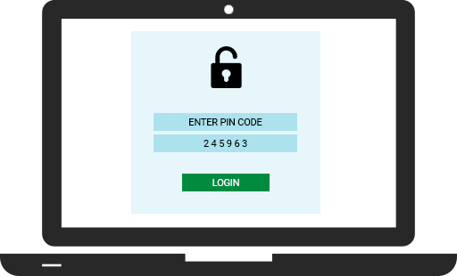

Segurança aprimorada para seus clientes.
Reduza casos de fraude e invasões e evite o acesso a dados por invasores.
Envia de OTP por meio de vários canais incluindo SMS e voz.
Flexibilidade de canais garante que o usuário conseguirá completar a tarefa desejada.
API simples e de rápida implementação.
Plataforma intuitiva que permite visualizar relatórios de uso por dia, mês ou ano.

O usuário acessa seu site ou aplicativo e digita a senha cadastrada para entrar em seu perfil ou completar uma transação.

A Telecall recebe a tentativa de login e solicita que o usuário insira seu número de telefone para autotizar o acesso.

Após inserir seu número, a Telecall envia para o usuário por SMS ou chamada de voz um código PIN de uso único.

O usuário insere o código no site ou aplicativo para concluir o processo de verificação.
O usuário insere o código no site ou aplicativo para concluir o processo de verificação.